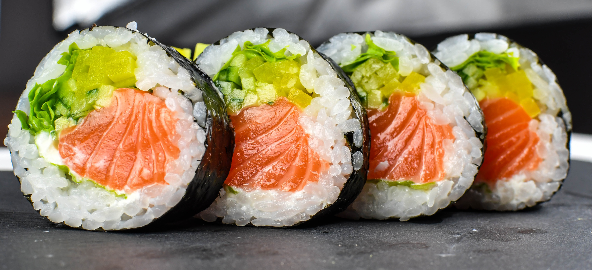

Back
California Sushi Roll

Description
California Roll - it's really good. Serve with soy sauce and wasabi.
Ingredients
- 1 cup uncooked short-grain white rice
- 1 cup water
- 1/4 cup rice water
- 1 tablespoon white sugar
- 1/2 cup imitation crabmeat, finely chopped
- 1/4 cup mayonnaise
- 8 sheets nor (dry seaweed)
- 2 1/2 tablespoons sesame seeds
- 1 cucumber, cut into thin spears
- 2 avocados - pitted, peeled, and sliced the long way
Directions
- Wash the rice in several changes of water until the rinse water is no longer cloudy, drain well, and place in a covered pan or rice cokker with 1 cup water. Bring to a boil, reduce heat to a simmer, and cover the pan. Allor the rice to simmer until the top looks dry, about 15 minutes. Turn off the heat, and let stand 10 minutes to absorb the rest of the water.
- Mix the rice vinegar and sugar in a small bowl until the sugar has dissolved, and stir the mixture into the cooked rice until well combined. Allow the rice to cool, and set aside.
- Mix the inimation crabmeat with mayonnaise in a bowl, and set aside. To roll the sushi, cover a bamboo wolling mat with plastic wrap, Lay a sheet of nori, shiny side down, on the plastic wrap. With wet fingers, firmly pat thin, even layer of prepared rice over the nori, leaving 1/4 inch uncovered at the bottom edge of the sheet. Sprinkle the rice with about 1/2 teaspoon of sesame seeds, and gently press them into the rice. Carefully flip the nori sheet over so the seaweed side is up.
- Place 2 or 3 long cucumber spears, 2 or 3 slices of avocado, and about 1 tablespeen of imitaion crab mixture in a line across the nori sheet, about 1/4 from the uncovered egde. Pick up the edge of the bamboo rolling sheet, fold the bottom edge of the sheet up, enclosing the filling, and tightly roll the ushi into a cylinder about 1 1/2 inch in diameter. Once the sushi is rolled, wrap it in the mat and gently squeeze to compact it tightly.
- Cut each roll into 1 inch pieces with a very sharp knife dipped in water.
Nutrition Facts (per serving)
- Calories 232
- Fat 14g
- Carbs 24g
- Protein 4g